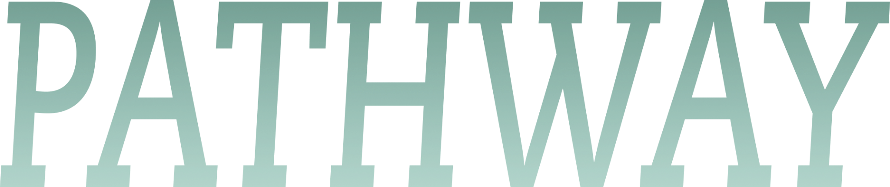
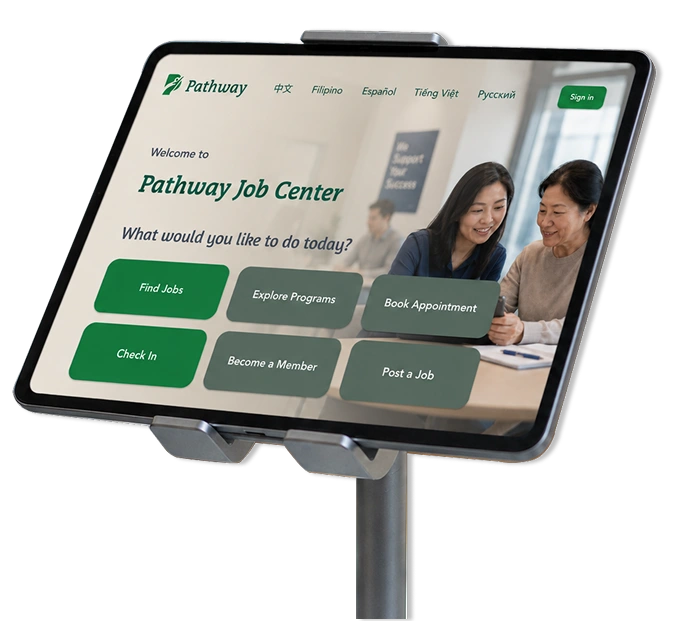
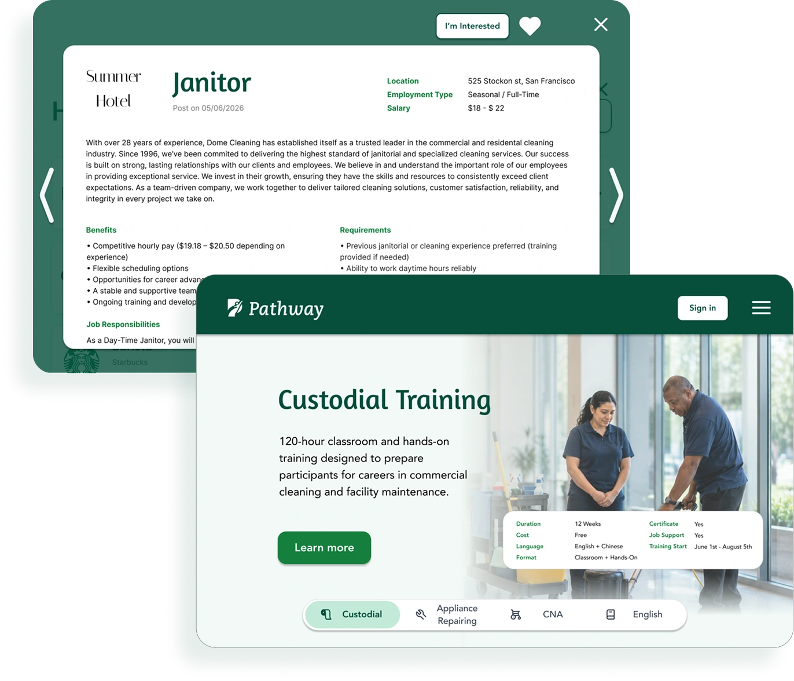
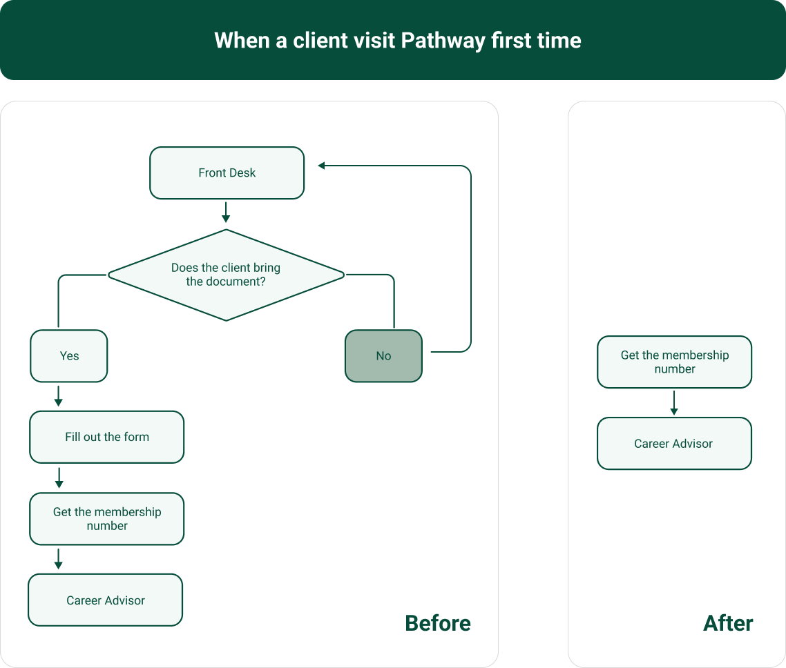
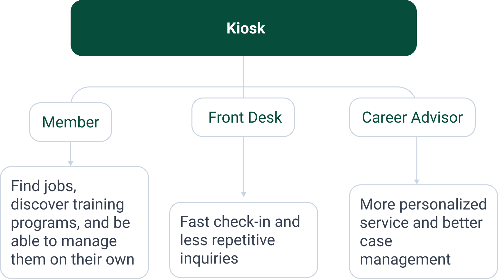
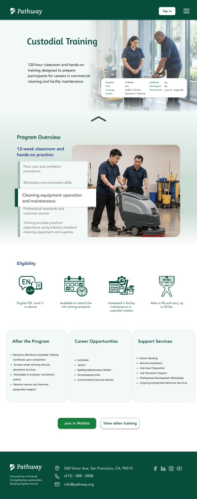
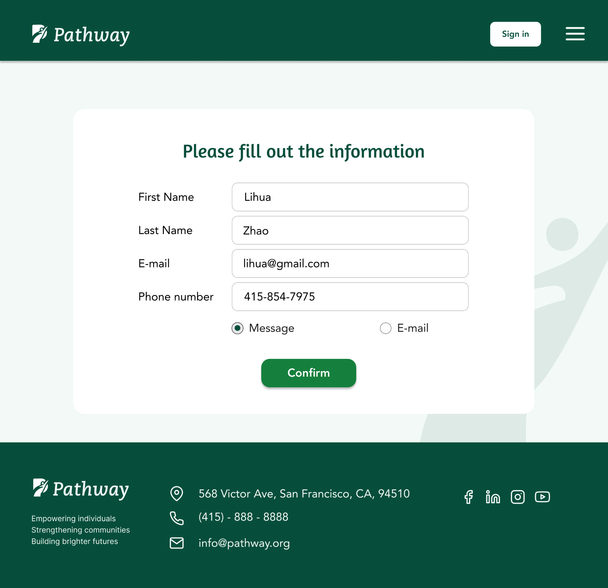
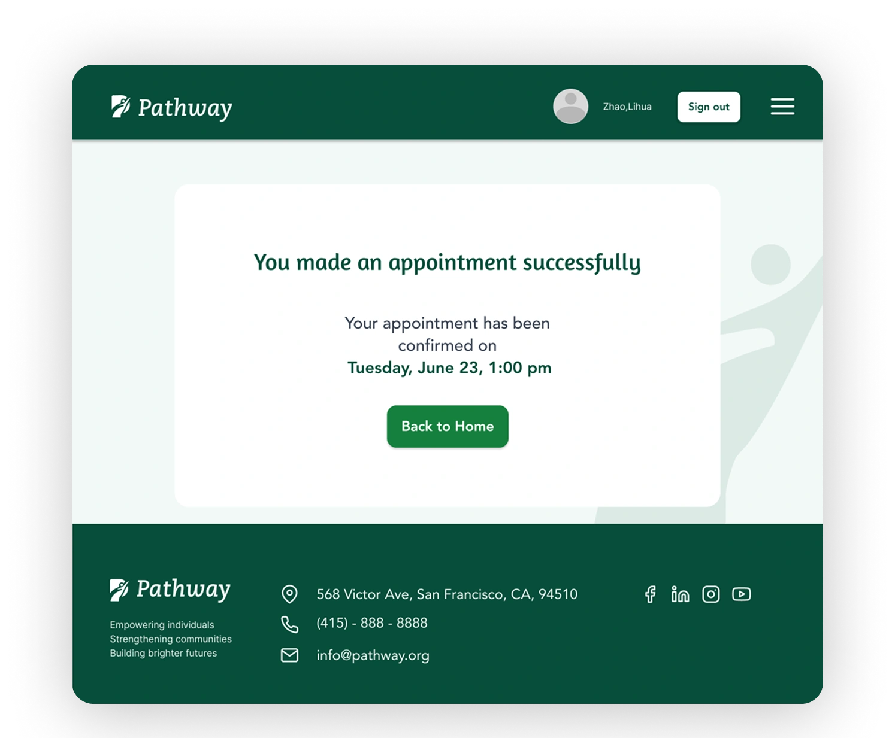
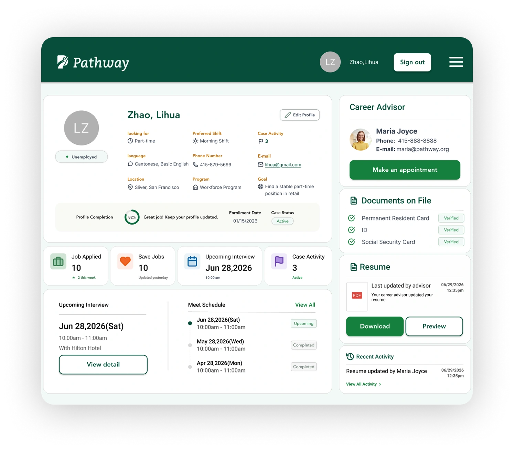

Job Seeker
Relies on staff to access jobs and services Needs guidance throughout the employment journey


What is Pathway

The kiosk was designed for Pathway Employment Centers to help manage members more efficiently by handling simple tasks for both members and new visitors, allowing Career Advisors to focus on more meaningful support. It introduces the center's services, enables clients to explore employment resources and book appointments when additional assistance is needed, and supports the center's member management system by tracking member records, progress, and activity history.
This helps Career Advisors provide more personalized support while allowing members to view their job-seeking journey from registration to employment.
Problem

Relies on staff to access jobs and services Needs guidance throughout the employment journey
Spends valuable time answering simple repetitive questions
Limited visibility into member engagement
Research
“I’m usually the first person clients meet when they walk into the center. Many arrive without an appointment, forget who their advisor is, or are unsure which department can help them. When several people arrive at once, it becomes difficult to assist everyone quickly.”
“I want to find a job and learn new skills, but my limited English makes it difficult to understand programs, applications, and onboarding instructions. I often cannot find clear information online, so I visit or call the agency for help.”
“I manage many clients at the same time. Some clients visit without appointments and clients need to brief who they are repeatedly. It is also challenging to memorize every client. I want a better way to organize follow-ups, set clear expectations, and help clients become more independent.”
Design goal

Introduce employment center services and guide new visitors through the membership onboarding process.
Empower members to independently explore jobs, training programs, and available services through a self-service experience.
Reduce reliance on staff for routine tasks such as check-in, job search, and booking appointments.
Capture member activity to help career advisors better understand engagement and prepare for personalized career support.
Final solution
Members can browse exclusive job listings, save positions they are interested in, and learn about career opportunities before requesting advisor support.
Hover over a screen to bring it forwardTap a screen to bring it forward
Training programs, career workshops, and employment services are organized into a self-service experience. Members can review eligibility, join waitlists, and book appointments without staff assistance.


Hover over a screen to bring it forward. Scroll to explore the program details.Tap a screen to bring it forward. Swipe up to explore the program details.
The dashboard keeps members connected through appointments, activity history, and personalized services while allowing advisors to better understand each member's interests and progress.

A website version is also available, allowing members to access core features and view their activity history. This gives career advisors better visibility into each member's progress and supports more personalized follow-up.

Impact
Access employment resources independently.
Spend more time providing career guidance instead of answering routine questions.
Improve member engagement and gain better visibility into service participation.
Designing a kiosk taught me to think beyond individual screens and design. Rather than focusing solely on member interactions, I learned to consider the needs of both members and staff, and how a digital platform can improve service quality without replacing human support. By reducing routine administrative tasks and connecting member activities across touch points, career advisors can spend more time providing personalized career guidance while the center delivers a more efficient and organized service experience.
Moving forward, I would validate the design through usability testing with members of different ages, language backgrounds, and digital literacy levels.